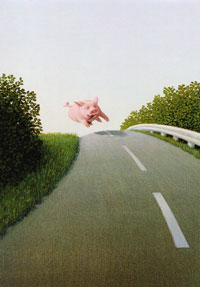
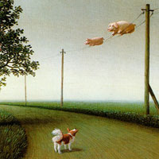

Летать всегда! Летать везде! Летать много, очень-очень много и всегда с улыбкой под пятачком - вот наше кредо!
Все пиггасы рано или поздно приходят к осмыслению никчемной жизни в грязной луже и подаются в летчики-пилоты. Причем для летания вовсе не нужна никакая посторонняя техника. Только сильное и несокрушимое желание, а также упорство, спортивная злость и немного вредности. Оно того стоит. Уж поверьте.
Всего лишь после недели тренировок на брезентовом батуте и трёх зачетных прыжков с крыши сарая, адепт получает звание летуна-прыгуна. При этом заработанные синяки, ссадины и шишки также засчитываются в опыт.
